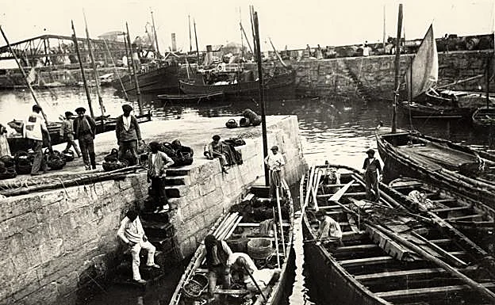
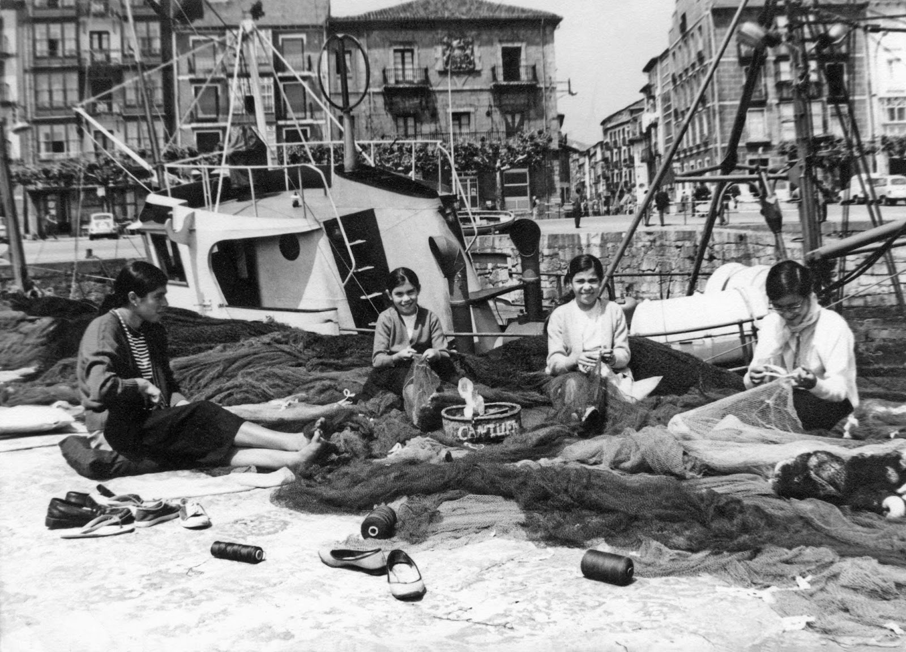
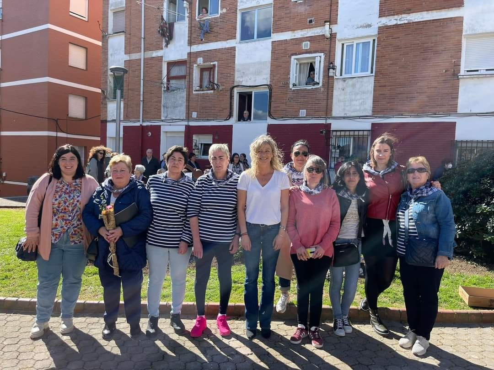

Nuestras Raíces
Nuestras Raíces Marineras
El Barrio de los Marineros es mucho más que un conjunto de calles; es el testimonio vivo de generaciones que entregaron su vida al Cantábrico.
Esta asociación nació con la misión de proteger esa memoria frente al olvido, asegurando que el sonido de las olas y el esfuerzo de nuestros antepasados sigan resonando en el corazón de Castro Urdiales.

Tejiendo Nuestra Identidad
El alma de nuestro barrio no solo se forjó en el mar, sino también en sus orillas. El incansable trabajo de las rederas representa el esfuerzo, la paciencia y la sabiduría de las mujeres de Castro, quienes con sus manos mantenían listos los aparejos para que la vida en el puerto nunca se detuviera.

Reconocimiento a Nuestra Labor
El compromiso de la Asociación Cultural Barrio de los Marineros con la memoria de Castro Urdiales no pasa desapercibido. En un día histórico para nosotros, recibimos el apoyo institucional durante el emotivo homenaje celebrado junto al ancla, símbolo de nuestra identidad marinera.
En la imagen, nuestras socias fundadoras y miembros de la junta directiva comparten un momento de orgullo con la alcaldesa de Castro Urdiales, sellando una alianza para seguir tejiendo el futuro de nuestras tradiciones. Este reconocimiento nos impulsa a seguir trabajando con más fuerza si cabe.
